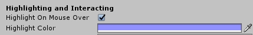

There are several types of core Interactable types in First Person Exploration Kit. They are all derived from the Base type, housed in the script file FPEInteractableBaseScript.cs
Note: In addition to the Inspector fields exposed from FPEInteractableBaseScript, each type below exposes additional values and options in the Inspector. Each class includes Inspector tool tips to explain what each field is used for, and each type below has at least one demo prefab in the Prefabs/DemoPrefabs folder (e.g. demoSoup is an example of a Pickup type object). Please refer to the included demoPrefabs, tool tips, and details below when creating your own Interactable prefabs.Each interaction type is handled according to the table below. These cases are handled in the FPEInteractionManagerScript file, and work in conjunction with the UI to let the player know
which interactions are available in each situation.
To modify these behaviours, see the CORE_INTERACTION_LOGIC code region. To modify how the UI reflects this logic, refer to the
CURSOR_AND_MOUSE code region - specifically, the updateControlHints() function.
Pickup Type allows for any object in your game to be picked up, examined, and either put back or dropped. For example, the player could pick up a photograph or book and look at it in detail, then put it back on the shelf where they got it. The player could also hold the object in their hand and walk around with it, then place it somewhere else in the game world.
Pickup examination types include Free, Horizontal, and Vertical
Inventory items behave in the same ways as Pickups, but they can also be stored by the player in their inventory. For example, the player can pick up a key from a table, walk around with it, examine it, drop it, and also put it in their inventory. These items can also be made requirements for other types of interactions. For example, a door can be made to require a key. A computer could require a password or access card.
Read more about Inventory Items documentation.
Pickups (and Inventory Items) can be configured to only allow certain types of rotation when being examined:
| Free Rotation | Object can be rotated in any direction (see demoSoup prefab) |
| Horizontal Lock | Object can only be rotated horizontally (see demoInstantPhoto prefab) |
| Vertical Lock | Object can only be rotated vertically (see demoPencil prefab) |
| Full Lock | Object cannot be rotated at all (see demoFlatPaper prefab) |
When setting up an Interactable object as a Pickup type, the Local Forward transform handle (blue arrow in scene editor) indicates the side of the object that will face the player when it is examined. For example, the demoFlatPaper prefab in the demo scene faces with Forward arrow pointing up away from the table it is sitting on. When the player picks the object up and examines it, the paper's front faces the camera. This is especially important for flat objects and those with the NONE rotation type.
This is not an Interactable type, but is related to the Pickup type. This script designates an area for the player to Put Back a Pickup type object. In the Pickup script, there is a flag to auto-generate Put Back locations (see demoSoup prefab). These locations can also be manually created if you wish for them to differ from the object's initial location in the world (See demoManuallyPlacedPutbackObjectForCardboardBox prefab in demo scene). This flexibility allows for a more interesting environment to explore and interact with.
Note: Auto-generating Put Back locations from Mesh Colliders may result in weird scales and orientations, depending on which package was used to create the models, and how they were imported. This can happen if the imported Mesh Collider geometry orientation differs fron Unity's coordinate system orientation, or the object was scaled during import. If that's the case, either adjust mesh collider accordingly, or switch to a Box Collider or other native Collider.Activate type objects can do special things when the player interacts with them. Activations can optionally fire Unity Events as part of their interaction. They can also require inventory type objects be in the player's posession in order for their activation to succeed. For example, a door can require the player have a key in order to unlock. Or a machine could require 3 batteries to turn on.
Dock type objects are similar to Activate type, but allow for the player to be "docked" onto them. For example, a dock type might be used for the player sitting down at a computer system, or to play an arcade game. The dock is defined by a location, focal point, and view restrictions. When activated, it moves the player to a specified location, moves their view to the focal point, and restricts view movement. For example, if the player was docked into a computer chair, their focal point might be the computer screen, and their view restrictions might be +/- 30 degrees to prevent them from looking too far away from the screen.
Journals trigger a UI element to be opened that contains one or more docuements that can be accessed like pages. For example, the player might open a note containing a single page, or a small book containing many pages.
Audio Diaries are used to play audio for the player in any form you wish. This can be a recorded voice mail, some narration from a character, or even a song.
The most basic type of Interactable, the Static type simply adds some text below the player's reticle. For example, if the player looks at a placard in a museum, a Static type object could list the title and artist for the work.
There are also auxillary or "passive" types in First Person Exploration Kit. They include:
Passive audio diaries are used to add narration or other audio as part of an interaction that is not itself an Audio Diary. For example, if the player picked up a bottle, you could use a passive audio diary to play a narration from a wine maker, explaining details of that vintage and its significance.
Note Entries can be attached to any Interactable type. They serve to add a note to the player's inventory. For example, if the player interacted with a recipe book, you could store a note containing a recipe for chocolate chip cookies into their inventory as part of that interaction. Or if the player grabbed a piece of inventory in the tutorial section, you could automatically add a note explaining how that inventory item works.
The Base type contains some logic for highlighting Interactable objects, and also contains a flag called Highlight On Mouse Over. If true, the Interactable object is highlighted.
If your Interactable object uses a material swap or UV offset change as part of its Interaction, you may notice that the "highlighting" action seems to ignore your swapped
material. This is caused by stored Materials becoming stale. To force a refresh of highlight materials, simply call the forceHighlightMaterialUpdate() function. This will do
a hard refresh of all previously collected materials and ensure the highlight is refreshed with the latest texture, UV offset, etc.
Below is a screenshot showing how
you can simply and easily call this function as part of your 'Activation' event(s) set, since every Interactable has access to its own Base functions, including
forceHighlightMaterialUpdate().
Alternatively, you can just uncheck the "Highlight On Mouse Over" checkbox in the Inspector for any such Interactable objects.